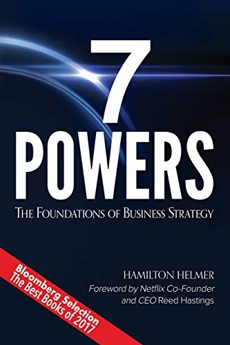

汉密尔顿·赫尔默（Hamilton Helmer）是一位拥有耶鲁大学经济学博士学位的战略咨询顾问，在逾三十年的职业生涯中，他先后为Adobe、Netflix、Spotify、Coursera等数百家企业提供战略建议。《七种力量》出版于2016年，是赫尔默将学术严谨性与实战经验融为一体的代表作。全书从第一性原理出发，尝试回答一个商业世界最根本的问题：是什么让一家企业能够长期维持高于竞争对手的利润率？赫尔默将这种条件定义为"力量"（Power）——即能够产生持续差异化回报的一组特定商业条件。
全书的核心论点凝结为一个简洁的战略方程式：价值 ＝ 市场规模 × 力量。赫尔默认为，真正有价值的企业必须同时具备两个要素：足够大的市场规模，以及能够抵御竞争套利的持续性优势。他将这种优势归纳为七种具体形态：规模经济（Scale Economies）、网络效应（Network Economies）、反向定位（Counter-Positioning）、转换成本（Switching Costs）、流程优势（Process Power）、强力品牌（Branding）以及独占资源（Cornered Resource）。每一种力量都兼具"收益"和"壁垒"两个维度——收益意味着这种力量能为企业带来更高的现金流，壁垒则意味着竞争对手无法通过简单模仿来消除这一优势。
《七种力量》的独特之处在于，它不满足于泛泛的竞争优势讨论，而是试图建立一套具有内在逻辑一致性的战略学分析框架。与波特的五力模型相比，赫尔默的框架更侧重于动态视角：力量不是静态存在的，它在企业发展的不同阶段有不同的获取窗口，而且一旦错过关键时机，往往难以补救。书中对Netflix、Nvidia、Intel等企业案例的剖析，清晰地展示了不同力量在真实商业环境中的形成路径与作用机制，令理论分析具有极强的可操作性。
Netflix联合创始人兼前CEO里德·黑斯廷斯（Reed Hastings）专门为本书撰写前言，并曾表示："竞争的力量极其强大，每个人都在抢你的午餐，如果你不读《七种力量》，你会死得更快。"（"The forces of competition are just incredibly strong. Everyone is trying to eat your lunch, and if you don't read 7 Powers you're going to die a lot sooner."）Spotify创始人丹尼尔·埃克（Daniel Ek）则称这套框架在Spotify内部讨论新项目时被广泛使用，"是各阶段企业都适用的绝佳工具"。对于希望深入理解竞争优势本质、追求长期价值创造的投资者与企业家而言，《七种力量》是近年来商业战略领域最具智识密度的著作之一。